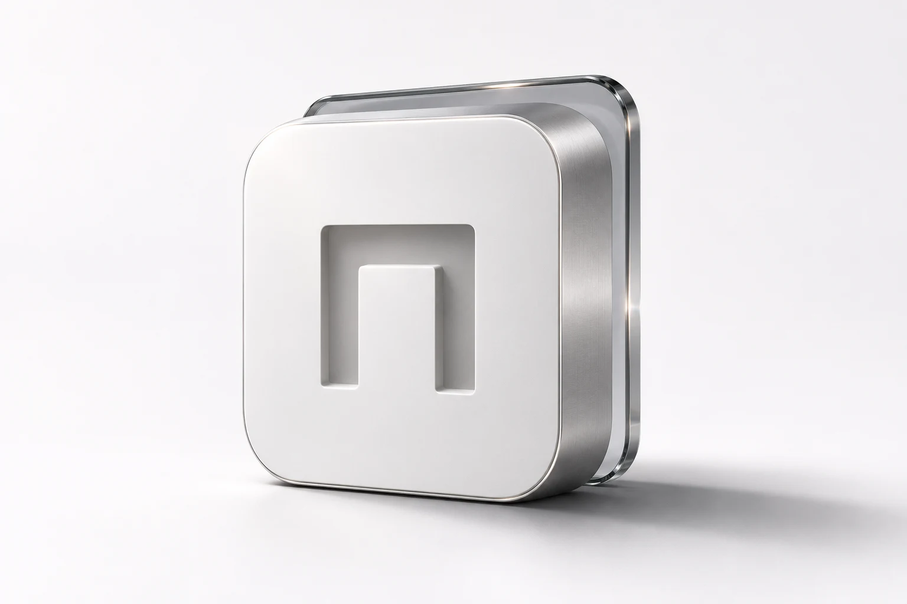

01
确认来源
向维护者核对版本、适用机型与公证状态。
ClaudeBar 是一款原生 macOS 工具。
已通过 Developer ID 签名与 Apple 公证，下载后拖入「应用程序」即可使用。
macOS 14+ · Apple Silicon · Apple Notarized · SHA-256 前缀 3110148e

向维护者核对版本、适用机型与公证状态。
收到 DMG 后按说明安装，保留 macOS 的安全检查。
选择档案和浏览器，核验出口，再启动受管会话。
不需要。若系统拦下来源尚未核实的版本，请保留安全检查，先向维护者核实安装包和说明。
需要应用仓库的访问权限。准备 Swift 6.2 或兼容工具链，按构建与测试文档操作。
不会。系统扩展需要相应签名、entitlement、配置描述文件与 macOS 批准，必须单独部署和验证。
从一个档案、一条线路开始。